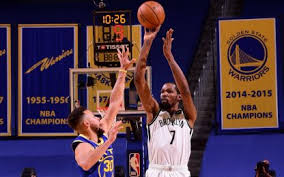
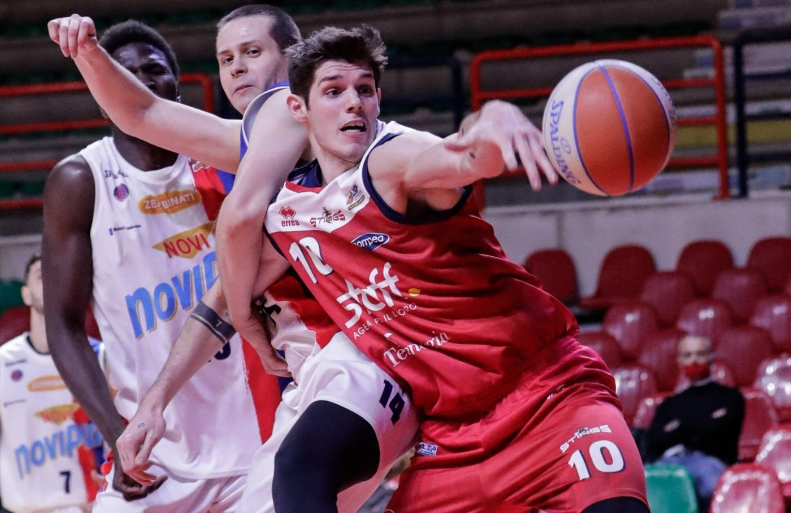
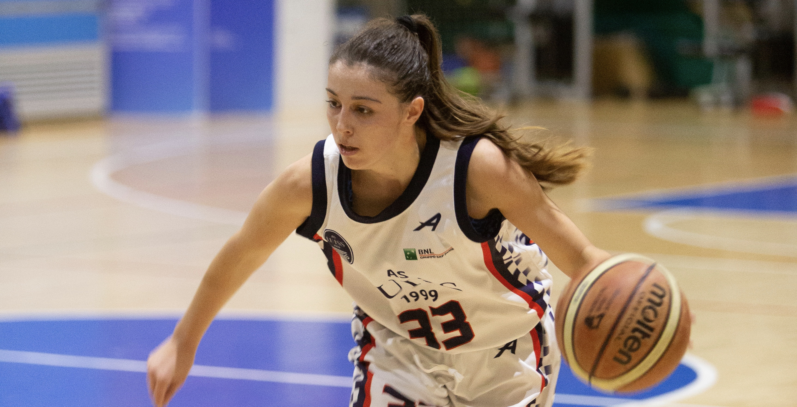

LeBron mostra i muscoli, ribaltone Lakers. Utah non si ferma più
Jokic salva Denver con Oklahoma City, scivolata di Sacramento contro Orlando, Melo fa brillare ancora Portland
Basket Serie A2 maschile – Ferrara: “Staff, in difesa siamo sulla strada giusta”
Tre vittorie su tre per il tecnico Gennaro Di Carlo da quando si è seduto sulla panchina degli Stings. Dopo Udine e Verona, cade anche Casale Monferrato. Due vittorie su tre in trasferta e quella in Piemonte dopo una partita che è sempre stata nelle mani di Ghersetti e compagni, grazie a una intensità in difesa che ha fatto la differenza da subito.
Continua a leggere... Basket femminile, Serie A1 2020-2021: la Reyer Venezia travolge San Martino di Lupari, Sesto San Giovanni batte facilmente Vigarano
Sono quattro le partite della diciannovesima giornata di Serie A1 2020-2021 di basket femminile che si sono svolte durante questo pomeriggio. Nella prima la Molisana Campobasso ha battuto facilmente la Dinamo Sassari con un nettissimo 73-51. Brillano Wojta, autrice di una prestazione da 24 punti, 8 rimbalzi e 7 assist, e Tikvic, che ha sfornato una doppia doppia da 19 punti e 12 rimbalzi
Continua a leggere... 